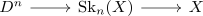

open set in a CW complex
Proposition
Let $(X, \emptyset, \mathrm{SK}_n(X))$ be a CW-Complex and $O \subseteq X$ a subset.
TFAE:
- $O$ is open
- $\iota^{-1}[O] \subseteq \mathrm{Sk}_n(X)$ is open for all coprojections
- $\iota^{-1}[O] \subseteq D^n$ is open for all coprojections

Proof
1) $\implies$ 2)
follows from continuity of the map $\mathrm{Sk}_n(X) \rightarrow X$
2) $\implies$ 3)
follows from continuity of the map $D^n \rightarrow \mathrm{Sk}_n(X)$
3) $\implies$ 2)
corollary of topology of a colimit.
2) $\implies$ 1)
again corollary of topology of a colimit